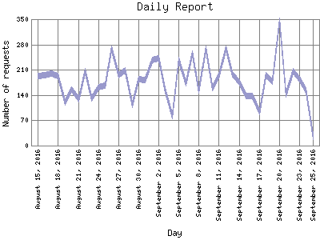

Analog 5.24
Analog 5.24 Report Magic for Analog 2.13
Report Magic for Analog 2.13The Daily Report identifies the activity for each day within the reporting period. Remember that one page hit can result in several server requests as the images for each page are loaded.

| Day | Number of requests | Percentage of the requests | |
|---|---|---|---|
| 1. | September 25, 2016 | 25 | 0% |
| 2. | September 24, 2016 | 152 | 0.2% |
| 3. | September 23, 2016 | 183 | 0.3% |
| 4. | September 22, 2016 | 205 | 0.3% |
| 5. | September 21, 2016 | 141 | 0.2% |
| 6. | September 20, 2016 | 346 | 0.6% |
| 7. | September 19, 2016 | 177 | 0.3% |
| 8. | September 18, 2016 | 195 | 0.3% |
| 9. | September 17, 2016 | 92 | 0.1% |
| 10. | September 16, 2016 | 137 | 0.2% |
| 11. | September 15, 2016 | 137 | 0.2% |
| 12. | September 14, 2016 | 174 | 0.3% |
| 13. | September 13, 2016 | 197 | 0.3% |
| 14. | September 12, 2016 | 269 | 0.4% |
| 15. | September 11, 2016 | 193 | 0.3% |
| 16. | September 10, 2016 | 160 | 0.2% |
| 17. | September 9, 2016 | 269 | 0.4% |
| 18. | September 8, 2016 | 153 | 0.2% |
| 19. | September 7, 2016 | 254 | 0.4% |
| 20. | September 6, 2016 | 172 | 0.2% |
| 21. | September 5, 2016 | 237 | 0.4% |
| 22. | September 4, 2016 | 81 | 0.1% |
| 23. | September 3, 2016 | 152 | 0.2% |
| 24. | September 2, 2016 | 242 | 0.4% |
| 25. | September 1, 2016 | 237 | 0.4% |
| 26. | August 31, 2016 | 182 | 0.3% |
| 27. | August 30, 2016 | 183 | 0.3% |
| 28. | August 29, 2016 | 112 | 0.1% |
| 29. | August 28, 2016 | 208 | 0.3% |
| 30. | August 27, 2016 | 195 | 0.3% |
| 31. | August 26, 2016 | 268 | 0.4% |
| 32. | August 25, 2016 | 167 | 0.2% |
| 33. | August 24, 2016 | 162 | 0.2% |
| 34. | August 23, 2016 | 131 | 0.2% |
| 35. | August 22, 2016 | 206 | 0.3% |
| 36. | August 21, 2016 | 128 | 0.2% |
| 37. | August 20, 2016 | 155 | 0.2% |
| 38. | August 19, 2016 | 119 | 0.2% |
| 39. | August 18, 2016 | 192 | 0.3% |
| 40. | August 17, 2016 | 199 | 0.3% |
| 41. | August 16, 2016 | 196 | 0.3% |
| 42. | August 15, 2016 | 193 | 0.3% |
Most active day May 3, 2008 : 2,131 requests handled.
Daily average: 180 requests handled.
This report was generated on September 25, 2016 02:30.
Report time frame December 18, 2007 17:05 to September 25, 2016 05:31.
| Web statistics report produced by: | |
| Analog 5.24 | Report Magic for Analog 2.13 |